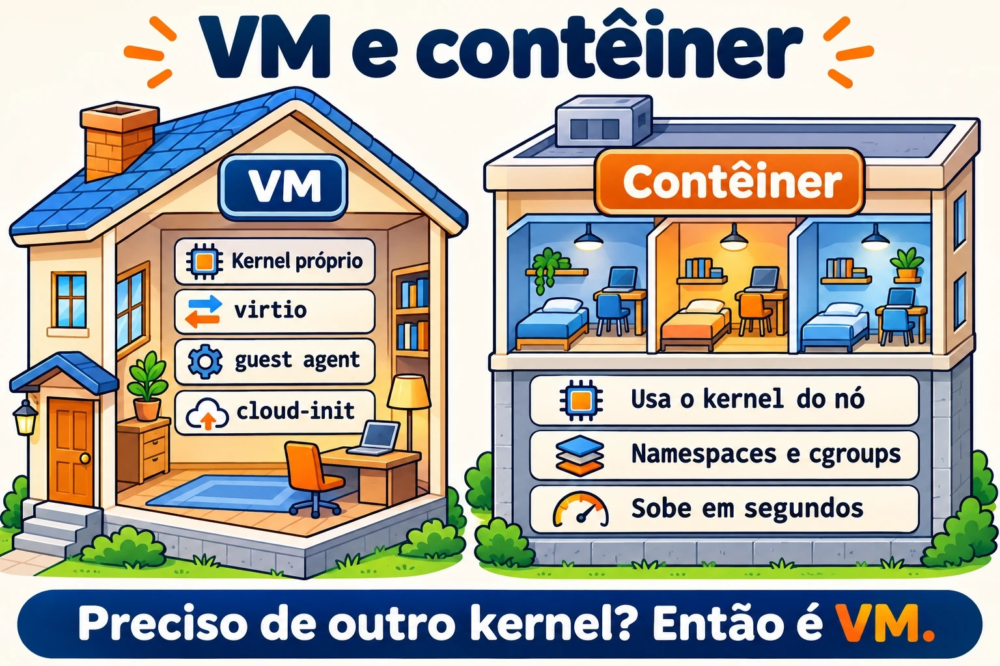
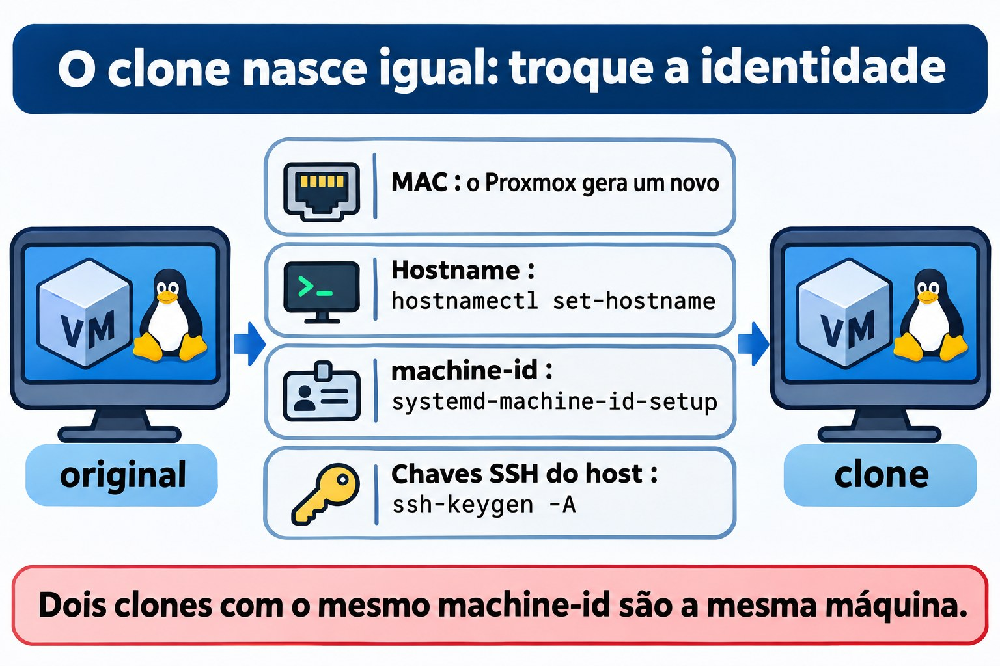

Aula 5.3 · Linux como convidado
Nas Aulas 5.1 e 5.2 você viu o kernel falar com o hardware. Só que, nas suas duas VMs, esse hardware não existe: quem responde é o QEMU, rodando no nó Proxmox. Hoje você vê o Linux do lado de dentro da VM. Como ele sabe que é convidado, que drivers usa para andar mais rápido, como conversa com o hipervisor pelo guest agent e como é configurado sozinho no primeiro boot pelo cloud-init. Você também vai ver o que acontece quando alguém clona uma VM e esquece que algumas coisas precisam ser únicas. No fim, você compara uma VM com um contêiner, que parece uma máquina mas usa o kernel de outra.
Núcleo desta aula:
systemd-detect-virtehostnamectlpara saber onde você está; os dispositivosvirtio; oqemu-guest-agent, dos dois lados (pacote na VM, opção no Proxmox); o que o cloud-init faz no primeiro boot; o que precisa ser único num clone: hostname,/etc/machine-ide as chaves SSH do host; e a diferença entre VM e contêiner: o kernel. O resto é aprofundamento.
| Ficha | Aula 5.3 |
|---|---|
| Módulo | M5 · Hardware, kernel e virtualização, aula 3 de 3 |
| Quando | Semana 9 |
| Ao final você consegue | Dizer se o Linux roda em VM, em contêiner ou em máquina física, e com qual hipervisor; reconhecer os dispositivos virtio e os seus módulos; instalar e ligar o guest agent na VM e no Proxmox, e usá-lo com qm agent e qm guest cmd; explicar o que o cloud-init faz e quando ele roda; listar o que deve ser único num clone e trocar hostname, machine-id e chaves SSH do host; ver na prática que um contêiner usa o kernel do hospedeiro |
| Pré-requisitos | Aula 5.1 (lspci -k, /sys, dmesg); Aula 5.2 (lsmod, modinfo); Aula 4.2 (systemd e unidades); o SSH entre o seu computador e as VMs |
| Tempo | Cerca de 2h30, mais o Desafio do módulo |
| Snapshots | m5a3-inicio e m5a3-fim nas duas VMs; m5-desafio antes do Desafio |
1 · Aquecimento
Três perguntas, de cabeça. Escreva as respostas; o Gabarito confere no fim.
- Você entra por SSH numa máquina desconhecida. Palpite: com um só comando, dá para saber se ela é uma VM?
- Você clona uma VM Linux no Proxmox e liga as duas. Palpite: elas vão ter o mesmo
/etc/machine-id? E isso importa? - Um contêiner Debian roda dentro da sua rocky-lab. Palpite: o que o
uname -rmostra dentro dele, o kernel da Debian ou o da Rocky?
2 · Por que importa
| O chamado | A resposta errada | O que ela causa |
|---|---|---|
| "O Proxmox não mostra o IP da VM, e o desligar pela GUI não funciona" | Desligar no botão Stop | O Stop é tirar da tomada. O que faltava era o guest agent: com ele, o Proxmox vê o IP, pede um desligamento limpo e congela o sistema de arquivos durante o backup |
| "Clonei a VM e agora as duas brigam pelo mesmo IP do DHCP, e o monitoramento só vê uma" | Trocar o hostname e achar que acabou | O machine-id e as chaves SSH continuam iguais. Dependendo da rede, o DHCP identifica as duas como a mesma máquina; o journal, o monitoramento e muitos agentes também usam o machine-id |
"O SSH diz que a identificação do servidor mudou: REMOTE HOST IDENTIFICATION HAS CHANGED" | Apagar o known_hosts inteiro, ou ignorar o aviso | Às vezes é só um clone com chaves novas. Às vezes é ataque. Quem sabe quando as chaves mudaram e por quê, decide com calma e remove só a linha certa |
| "Vamos rodar isso num contêiner, que é mais leve" | Tratar o contêiner como uma VM menor | O contêiner usa o kernel do hospedeiro. Não carrega módulo próprio, não escolhe a versão do kernel e, se o kernel do hospedeiro cair, cai junto |
3 · Modelo mental
Pense num prédio comercial, como na Aula 5.1. Uma VM é uma sala alugada com portaria própria: o kernel dela é seu, com os seus drivers, e o hipervisor finge ser o hardware. Os drivers
virtiosão o interfone direto com o síndico: em vez de fingir um hardware antigo, o convidado sabe que está numa VM e fala a língua do hipervisor, que é mais rápida. O guest agent é o zelador da sala, que atende o síndico (o Proxmox) quando ele pergunta o IP ou pede para fechar tudo. O cloud-init é o kit de mudança: no primeiro dia, ele monta a sala com o nome, os usuários e as chaves que vieram no pacote. Um contêiner não é uma sala com portaria: é uma divisória dentro de outra sala, que usa a mesma portaria (o mesmo kernel).
MÁQUINA FÍSICA (nó Proxmox)
┌───────────────────────────────────────────────────────────────┐
│ kernel do nó (KVM) │
│ ┌────────────── QEMU ─────────────┐ ┌──── LXC ───────────┐ │
│ │ VM rocky-lab │ │ contêiner │ │
│ │ kernel PRÓPRIO │ │ processos isolados │ │
│ │ virtio_net, virtio_scsi │ │ SEM kernel próprio │ │
│ │ qemu-guest-agent ◄── canal ────┼─► │ usa o kernel do nó │ │
│ │ cloud-init (1º boot) virtio-serial │ │ │
│ └─────────────────────────────────┘ └─────────────────────┘ │
└───────────────────────────────────────────────────────────────┘

4 · O essencial
Onde estou?
| Comando | O que mostra |
|---|---|
systemd-detect-virt | kvm, qemu, vmware, microsoft, oracle... numa VM; lxc, podman, docker... num contêiner; none na máquina física |
systemd-detect-virt -c / -v | Só contêiner / só VM |
hostnamectl | Linha Virtualization: e Chassis: vm, além do hostname e do kernel |
lscpu | grep -i hypervisor | Hypervisor vendor: KVM |
sudo dmidecode -s system-product-name | O "modelo" que o hipervisor inventou, como Standard PC (Q35 + ICH9, 2009) |
Os drivers virtio
O hipervisor pode imitar um hardware real e antigo, como a placa de rede e1000 ou um disco IDE. Funciona em qualquer sistema, mas é lento, porque cada acesso é traduzido. O virtio é um hardware que só existe em VM: o convidado sabe disso e conversa direto com o hipervisor. No Linux, os drivers virtio já vêm no kernel.
| Dispositivo no Proxmox | Driver no convidado | Como aparece |
|---|---|---|
| VirtIO SCSI (controladora) | virtio_scsi | Discos sda, sdb... |
| VirtIO Block | virtio_blk | Discos vda, vdb... |
| Placa VirtIO | virtio_net | ens18 ou eth0 |
| Balloon | virtio_balloon | O hipervisor pode pegar RAM de volta |
| RNG VirtIO | virtio_rng | Fonte de aleatoriedade |
| Serial VirtIO | virtio_console | O canal do guest agent |
O guest agent
O qemu-guest-agent é um serviço que roda dentro da VM e responde ao Proxmox por um canal serial virtual. Ele precisa de duas metades, e esquecer uma é o erro clássico:
- No Proxmox: a opção
QEMU Guest Agentligada (qm set ID --agent enabled=1). Ela cria o dispositivo serial, e só vale depois de desligar e ligar a VM pelo Proxmox. - Na VM: o pacote
qemu-guest-agentinstalado e o serviço rodando.
Com as duas metades, o Proxmox mostra os IPs na GUI, faz um desligamento limpo, congela o sistema de arquivos (fsfreeze) durante o backup para a cópia sair consistente, e deixa você perguntar coisas com qm agent e qm guest cmd.
cloud-init
O cloud-init roda no primeiro boot de uma imagem de nuvem e configura a máquina com dados que vêm de fora: hostname, usuários, chaves SSH autorizadas, rede e pacotes. Esses dados vêm de uma datasource: um serviço de metadados na AWS ou no OpenStack, ou um CD virtual no Proxmox (a aba Cloud-Init). O cloud-init guarda um instance-id: enquanto ele não muda, a máquina não se considera nova e não refaz a configuração de primeiro boot.
| Comando ou arquivo | Para quê |
|---|---|
cloud-init status --long | Rodou? Terminou? Deu erro? |
/var/log/cloud-init.log e cloud-init-output.log | O que ele fez, passo a passo |
/etc/cloud/cloud.cfg e /etc/cloud/cloud.cfg.d/ | O que ele está autorizado a mudar |
sudo cloud-init clean --logs | Apaga o estado. No próximo boot, ele age como se fosse a primeira vez. É o que se faz antes de transformar a VM em template |
Clones e o que precisa ser único
Um clone completo copia o disco inteiro. Um clone ligado (linked clone) usa o disco do template como base e grava só as diferenças. Nos dois casos, o disco do clone começa igual ao original, com tudo o que está dentro dele:
| Identificador | Onde fica | Quem troca |
|---|---|---|
| Endereço MAC | Configuração da VM | O Proxmox gera um novo no clone |
| Hostname | /etc/hostname e /etc/hosts | Você, com hostnamectl set-hostname, ou o cloud-init |
machine-id | /etc/machine-id (na Debian, também /var/lib/dbus/machine-id) | Você, com systemd-machine-id-setup, ou a imagem já vem com o arquivo vazio |
| Chaves SSH do host | /etc/ssh/ssh_host_* | Você, com ssh-keygen -A, ou o cloud-init |
| IP fixo | Configuração de rede | Você, ou o cloud-init |
O machine-id é o "CPF" da instalação: 32 caracteres hexadecimais criados na instalação. O journal guarda os logs numa pasta com esse nome, o systemd-networkd usa esse ID para se identificar no DHCP, e muito agente de monitoramento ou de backup também. Dois clones com o mesmo machine-id são, para essas ferramentas, a mesma máquina.
As chaves SSH do host provam ao cliente que o servidor é o mesmo da última vez. Dois clones com as mesmas chaves são indistinguíveis para o SSH: se um deles for comprometido, a chave privada dele serve para se passar pelo outro.


VM e contêiner lado a lado
VM (QEMU/KVM, qm) | Contêiner (LXC com pct, Podman, Docker) | |
|---|---|---|
| Kernel | Próprio | O do hospedeiro |
| Boot | GRUB, initramfs, systemd | Começa direto no processo principal, às vezes um systemd |
Módulos e sysctl | Carrega e muda os seus | Não carrega módulo; muitos sysctl são só leitura ou do hospedeiro |
| Outro sistema operacional | Qualquer um, até Windows | Só Linux, com o kernel de quem hospeda |
| Isolamento | Forte: o hipervisor separa | Mais fraco: tudo depende do kernel compartilhado |
| Custo | Mais RAM e mais disco | Leve: sobe em segundos |
Rocky × Debian
| Tema | Rocky | Debian |
|---|---|---|
| Guest agent | dnf install qemu-guest-agent | apt install qemu-guest-agent |
| Ligar o serviço | O pacote não liga sozinho em toda versão: confira com systemctl status e ligue com systemctl enable --now | O serviço sobe quando o dispositivo serial aparece; sem a opção ligada no Proxmox, ele fica parado esperando |
| Chave SSH do host ausente | O sshd-keygen@.service gera as que faltam quando o sshd sobe | O ssh não sobe. É preciso rodar ssh-keygen -A ou dpkg-reconfigure openssh-server |
/var/lib/dbus/machine-id | Costuma não existir; o D-Bus lê o /etc/machine-id | Costuma ser um link para o /etc/machine-id; confira com ls -l |
| Imagens de nuvem | Vêm com cloud-init | Vêm com cloud-init |
5 · Lab guiado
Passo 0 · Snapshot e pasta
No nó Proxmox:
qm snapshot 201 m5a3-inicio
qm snapshot 202 m5a3-inicioEm cada VM:
mkdir -p ~/lab53 && cd ~/lab53Passo 1 · Onde estou?
Nas duas VMs:
systemd-detect-virt
hostnamectl
lscpu | grep -i hypervisor
sudo dmidecode -s system-product-name
lspci | grep -i virtio
lsmod | grep virtioNo nó Proxmox, rode systemd-detect-virt também. Ele deve responder none: o nó é a máquina física.
Anote em ~/lab53/notas.txt o que o systemd-detect-virt respondeu em cada lugar e quais módulos virtio cada VM carrega. Compare com o que a aba Hardware da VM mostra no Proxmox: a controladora de disco e o modelo da placa de rede.
Passo 2 · O guest agent, as duas metades
Primeiro, a metade da VM. Na rocky-lab:
sudo dnf -y install qemu-guest-agent
sudo systemctl enable --now qemu-guest-agent
systemctl status qemu-guest-agent --no-pagerNa debian-lab:
sudo apt -y install qemu-guest-agent
systemctl status qemu-guest-agent --no-pagerNa Debian, o serviço pode aparecer parado, esperando o dispositivo virtio-ports/org.qemu.guest_agent.0. Isso é normal enquanto a outra metade não estiver ligada.
Agora, a metade do Proxmox. No nó:
qm config 201 | grep agent
qm set 201 --agent enabled=1
qm set 202 --agent enabled=1Decida 1
Você ligou a opção do agent. Na debian-lab, você roda sudo systemctl reboot. Depois que ela volta, você roda qm agent 202 ping no nó. O que acontece?
- A) Responde sem erro, porque a VM reiniciou.
- B) Dá erro, porque o reboot de dentro da VM não aplica a mudança de hardware.
- C) Dá erro, porque o serviço da Debian precisa de
enablemanual.
Marque uma opção antes. Depois faça o teste.
| Se você marcou | Resultado | Por quê |
|---|---|---|
| A | Errou | O reboot de dentro reinicia o sistema, mas o processo QEMU continua o mesmo, com o hardware antigo. A GUI mostra a opção como mudança pendente |
| B | Acertou | Mudança de hardware só vale quando o Proxmox desliga e liga a VM: qm shutdown e qm start, ou qm reboot, ou o Reboot da GUI |
| C | Errou | Na Debian, o serviço sobe sozinho quando o dispositivo aparece. O problema é que o dispositivo ainda não existe |
Agora aplique de verdade e converse com o agente:
qm reboot 201
qm reboot 202
# espere as VMs voltarem
qm agent 201 ping && echo ok
qm agent 202 ping && echo ok
qm guest cmd 202 get-osinfo
qm guest cmd 202 network-get-interfaces | grep -E '"name"|ip-address"'
qm guest cmd 201 get-fsinfo | grep -E 'mountpoint|type'Na GUI, a página Summary das duas VMs agora mostra os IPs.
Para fixar: o guest agent só funciona com as duas metades: o pacote dentro da VM e a opção no Proxmox, aplicada com um desliga e liga feito pelo Proxmox.
Passo 3 · cloud-init, só olhando
Suas VMs foram instaladas pelo ISO, então o cloud-init provavelmente não está lá. Confira:
command -v cloud-init || echo "cloud-init não instalado"Se estiver instalado, olhe sem mudar nada:
cloud-init status --long
sudo tail -20 /var/log/cloud-init.log
ls /etc/cloud/cloud.cfg.d/No nó, veja como o Proxmox entrega os dados ao cloud-init de uma VM que use uma imagem de nuvem:
man qm | grep -A2 -E '^ +--(ciuser|sshkeys|ipconfig0)'As opções --ciuser, --sshkeys e --ipconfig0 vão para um CD virtual que o cloud-init lê no boot. Você não vai montar um template agora. Ele aparece de novo no módulo de automação.
Passo 4 · A identidade da VM
Na debian-lab:
hostnamectl hostname
cat /etc/machine-id
ls -l /var/lib/dbus/machine-id
ls /var/log/journal/
ls -l /etc/ssh/ssh_host_*
for k in /etc/ssh/ssh_host_*_key.pub; do ssh-keygen -lf "$k"; doneNo seu computador, compare a impressão digital com a que o cliente SSH guardou:
ssh-keygen -F IP_DA_DEBIAN -lO nome da pasta em /var/log/journal/ é o machine-id. Guarde as três coisas em ~/lab53/identidade.txt: hostname, machine-id e a impressão da chave ed25519. Você vai precisar delas no Desafio.
Decida 2
Você clona a debian-lab sem mexer em nada e liga o clone. Quais destas coisas o clone tem igual à original?
- A) Só o hostname.
- B) Hostname,
machine-ide chaves SSH do host. O MAC é novo. - C) Tudo, inclusive o MAC.
Marque uma opção antes. A conferida fica para o Desafio do módulo.
| Se você marcou | Resultado | Por quê |
|---|---|---|
| A | Errou | O disco é copiado inteiro, e com ele os arquivos /etc/machine-id e /etc/ssh/ssh_host_* |
| B | Acertou | O MAC fica na configuração da VM, e o Proxmox gera outro no clone. Tudo o que está no disco vem igual |
| C | Errou | O Proxmox troca o MAC justamente para as duas poderem ficar na mesma rede |
Para fixar: clone copia o disco. Tudo o que identifica a máquina e mora no disco precisa ser trocado à mão, por uma ferramenta como o virt-sysprep, ou pelo cloud-init.
Passo 5 · Um contêiner ao lado
Na rocky-lab, com internet:
sudo dnf -y install podman
uname -r
podman run --rm docker.io/library/debian:12 cat /etc/os-release
podman run --rm docker.io/library/debian:12 uname -r
podman run --rm docker.io/library/debian:12 ls /boot /lib/modulesO contêiner diz que é Debian 12, mas o uname -r mostra o kernel da Rocky, com el9 no nome. E não há /boot nem módulos: não há kernel para carregar. É a resposta da pergunta 3 do Aquecimento, ao vivo.
Para terminar, tente mudar um parâmetro do kernel de dentro do contêiner:
podman run --rm docker.io/library/debian:12 sh -c 'echo 10 > /proc/sys/vm/swappiness'O kernel recusa, porque o /proc/sys aparece só para leitura no contêiner: o kernel é do hospedeiro, e quem manda nele é o hospedeiro.
6 · Quebre e conserte
Nesta quebra você apaga as chaves SSH do host nas duas VMs e vê que cada distro reage de um jeito. Faça pelo console do Proxmox, não pelo SSH. Uma sessão SSH aberta não cai quando o serviço reinicia, mas você não consegue abrir outra.

Nas duas VMs:
sudo cp -a /etc/ssh ~/lab53/ssh-antes
sudo rm /etc/ssh/ssh_host_*Na rocky-lab, sudo systemctl restart sshd. Na debian-lab, sudo systemctl restart ssh. Depois, investigue sem olhar o conserto:
systemctl status sshd --no-pager # Rocky
systemctl status ssh --no-pager # Debian
journalctl -b -u ssh --no-pager | tail -5
ls /etc/ssh/ssh_host_*Na Rocky, o sshd sobe: o sshd-keygen@ gerou chaves novas antes. Na Debian, o ssh falha, com algo como no hostkeys available. Do seu computador, tente entrar nas duas. A Rocky responde com o aviso REMOTE HOST IDENTIFICATION HAS CHANGED, porque as chaves mudaram. A Debian recusa a conexão.
O conserto na Debian:
sudo ssh-keygen -A
sudo systemctl restart ssh
systemctl status ssh --no-pagerNo seu computador, remova só a linha antiga de cada VM e entre de novo, conferindo a impressão digital nova com a que o console mostra:
ssh-keygen -R IP_DA_ROCKY
ssh-keygen -R IP_DA_DEBIANA lição: o aviso de chave mudada não se ignora e não se resolve apagando o known_hosts inteiro. Você descobre por que a chave mudou, confere a impressão nova por outro caminho (aqui, o console) e só então tira a linha velha.
7 · Armadilhas
- Ligar o agent só de um lado. O pacote sem a opção no Proxmox, ou a opção sem o pacote, dão o mesmo resultado: nada.
- Reiniciar por dentro e esperar mudança de hardware. Só o desliga e liga feito pelo Proxmox aplica.
- Apagar o
/etc/machine-id. O caminho certo é esvaziar ou remover e recriar comsystemd-machine-id-setup, e conferir o/var/lib/dbus/machine-idna Debian. Um sistema sem o arquivo pode não subir direito. - Fazer template sem limpar. Se você transforma uma VM em template sem limpar
machine-id, chaves SSH e o estado do cloud-init, todos os clones nascem gêmeos. - Esquecer o
/etc/hosts. Ohostnamectl set-hostnamemuda o/etc/hostname, mas o nome antigo continua no/etc/hosts, e osudopode ficar lento ou reclamar. - Tratar o contêiner como VM. Ele não tem kernel próprio: módulos, muitos
sysctle a versão do kernel vêm do hospedeiro. - Clone com IP fixo ligado na rede. Dois IPs iguais na mesma rede derrubam as duas máquinas aos poucos. Ligue o clone com a placa desconectada até trocar o IP.
8 · Quiz
- Que comando diz se você está numa VM, num contêiner ou numa máquina física?
- Quais são as duas metades do guest agent, e como se aplica a metade do Proxmox?
- O que o cloud-init faz, e quando?
- Cite três coisas que precisam ser únicas num clone e diga onde cada uma fica.
- Por que um contêiner Debian dentro da Rocky mostra o kernel da Rocky?
- Which file holds the systemd machine ID, and which command creates a new one?
9 · Cola
Para saber de cor
| Comando ou arquivo | Faz |
|---|---|
systemd-detect-virt / hostnamectl | Onde estou / hostname, chassis e virtualização |
qm set ID --agent enabled=1 + qm reboot ID | Liga o agent no Proxmox e aplica |
qm agent ID ping / qm guest cmd ID network-get-interfaces | Testa o agent / pergunta os IPs |
hostnamectl set-hostname nome | Troca o hostname (e depois o /etc/hosts) |
/etc/machine-id + systemd-machine-id-setup | O ID da instalação e quem o recria |
/etc/ssh/ssh_host_* + ssh-keygen -A | As chaves do host e quem gera as que faltam |
ssh-keygen -R host | Remove só aquele host do known_hosts |
Para consultar
systemd-detect-virt -c e -v, lscpu, dmidecode, virtio_scsi, virtio_blk, virtio_net, virtio_balloon, qm guest cmd ID get-osinfo, get-fsinfo, fsfreeze-status, cloud-init status --long, cloud-init clean --logs, /var/log/cloud-init.log, /etc/cloud/cloud.cfg.d/, qm set --ciuser --sshkeys --ipconfig0, qm clone --full, qm template, virt-sysprep, sshd-keygen@.service, dpkg-reconfigure openssh-server, ssh-keygen -lf, ssh-keygen -F, podman run --rm, pct list.
Flashcards
| Pergunta | Resposta |
|---|---|
systemd-detect-virt na máquina física responde... | none |
| Reboot de dentro da VM aplica mudança de hardware? | Não; só o desliga e liga do Proxmox |
| O clone do Proxmox troca o MAC? | Sim; o que está no disco, não |
| Debian sem chave SSH do host... | O ssh não sobe; a Rocky gera chaves novas sozinha |
| Contêiner tem kernel próprio? | Não; usa o do hospedeiro |
10 · Checklist e fechamento
- [ ] Descobri onde cada máquina roda com
systemd-detect-virtehostnamectl - [ ] Reconheci os dispositivos e módulos
virtiodas duas VMs - [ ] Liguei o guest agent dos dois lados e vi os IPs com
qm guest cmd - [ ] Expliquei o que o cloud-init faz, mesmo sem ele instalado
- [ ] Anotei hostname,
machine-ide chave SSH da debian-lab - [ ] Vi um contêiner Debian rodar no kernel da Rocky
- [ ] Apaguei as chaves SSH do host, vi a diferença entre as distros e consertei
Último exercício, sem olhar a aula: de dentro de cada VM, sem usar a GUI, diga o IP dela e confirme pelo nó com qm guest cmd. Depois, na rocky-lab, apague a imagem que o Podman baixou (podman images, depois podman rmi com o nome que aparecer).
Reboot e conferência: reinicie as duas VMs pelo Proxmox (qm reboot) e confira:
systemctl status qemu-guest-agent --no-pager # active (running)
systemctl --failed # vazio
ls ~/lab53No nó, qm agent 201 ping e qm agent 202 ping sem erro.
Snapshot de fim, no nó Proxmox:
qm snapshot 201 m5a3-fim
qm snapshot 202 m5a3-fimO guest agent fica ligado daqui em diante. Ele vai ajudar nos backups e nos próximos módulos.
11 · Na vida real
Missão, só leitura. Num servidor real que você administra, rode apenas estes comandos, que não mudam nada:
systemd-detect-virt
hostnamectl
systemctl is-active qemu-guest-agent 2>/dev/null || echo "sem guest agent"
cat /etc/machine-id
command -v cloud-init && cloud-init statusSe for uma VM do Proxmox, olhe também, no nó, só lendo: qm config ID | grep agent.
Responda: as VMs que você administra têm o guest agent dos dois lados? Se não têm, o backup delas está saindo sem congelar o sistema de arquivos. Duas máquinas suas têm o mesmo machine-id? Isso denuncia um clone mal feito. Anote o que achou. Não mude nada sozinho.
Diário: escreva três linhas sobre o que você aprendeu hoje e uma dúvida que ficou.
Amanhã, sem olhar:
- Liste, em ordem, o que você faria num clone recém-criado antes de ligá-lo na rede.
- Explique por que o reboot de dentro da VM não liga o guest agent.
- Diga uma vantagem e uma desvantagem do contêiner em relação à VM.
12 · Aprofundar quando quiser
virt-sysprep(pacoteguestfs-toolsoulibguestfs-tools): limpamachine-id, chaves SSH, logs e histórico de um disco de VM desligada.- Templates no Proxmox com imagens de nuvem da Rocky e da Debian:
qm importdisk, a aba Cloud-Init eqm template. - Os arquivos
user-data,meta-dataenetwork-configdo cloud-init, e a datasource NoCloud. - Clone ligado versus clone completo: espaço, desempenho e por que não se apaga o template de um clone ligado.
systemd-firstbooteConditionFirstBoot=: como o systemd sabe que é o primeiro boot.- Contêineres LXC no Proxmox (
pct), privilegiados e não privilegiados. - Namespaces e cgroups: as peças do kernel que fazem um contêiner existir.
No DeepTutor: !explica guest agent do QEMU, !feynman diferença entre VM e contêiner, !quiz Linux como convidado.
Desafio do módulo 5
Missão: clonar a debian-lab e dar ao clone identidade própria: hostname, machine-id e chaves SSH do host. No fim, as duas VMs ficam ligadas ao mesmo tempo, na mesma rede, sem conflito. Sem olhar a aula; o Gabarito tem dicas, se travar.
Antes de começar, no nó Proxmox:
qm snapshot 202 m5-desafio
qm list # escolha um VMID livre, por exemplo 902Regras:
- Clone completo, no storage
vm-hdd, com o nomedebian-clone. - Ligue o clone com a placa de rede desconectada e faça tudo pelo console, até a identidade estar trocada. Se a debian-lab usar IP fixo, troque o IP também.
- A debian-lab original não muda em nada.
- Tempo-alvo: 30 minutos.
Critérios de sucesso:
| Conferir | Como | Esperado |
|---|---|---|
| Hostname | hostnamectl hostname no clone | debian-clone, e o /etc/hosts sem o nome antigo |
machine-id | cat /etc/machine-id nas duas | Diferentes; o do clone com 32 caracteres hexadecimais |
| D-Bus | ls -l /var/lib/dbus/machine-id no clone | Link para o /etc/machine-id, ou o mesmo conteúdo |
| Chaves SSH | ssh-keygen -lf /etc/ssh/ssh_host_ed25519_key.pub nas duas | Impressões diferentes; compare com o identidade.txt |
| Rede | ip -br a nas duas, com o clone já conectado | IPs diferentes, e os dois respondem ao ping |
| SSH | Do seu computador, ssh para as duas | As duas entram; o clone aparece como host novo no known_hosts |
| Agent | qm agent 902 ping no nó | Sem erro |
Rollback, se algo der errado na original: qm rollback 202 m5-desafio.
Limpeza, quando você terminar e conferir tudo: no nó, qm stop 902 e depois qm destroy 902 --purge. Confira o número duas vezes antes de apertar Enter. No seu computador, tire o clone do known_hosts com ssh-keygen -R IP_DO_CLONE.
Gabarito comentado
Aquecimento
- Sim.
systemd-detect-virtrespondekvm,vmware,lxc... ounone. Ohostnamectltambém mostra, na linhaVirtualization. - Sim, vão ter o mesmo, porque o arquivo está no disco e o disco foi copiado. E importa: o journal, o DHCP do
systemd-networkde vários agentes usam omachine-idpara saber quem é quem. - O da Rocky. O contêiner traz os arquivos da Debian, mas roda no kernel do hospedeiro.
Quiz
systemd-detect-virt. Ohostnamectltambém serve.- O pacote
qemu-guest-agentrodando dentro da VM, e a opção--agent enabled=1no Proxmox. A opção cria um dispositivo serial e só vale depois de o Proxmox desligar e ligar a VM, por exemplo comqm reboot. - Configura a máquina no primeiro boot com dados de uma datasource: hostname, usuários, chaves SSH, rede, pacotes. Ele só refaz isso se o
instance-idmudar ou se alguém rodarcloud-init clean. - Hostname, em
/etc/hostnamee/etc/hosts;machine-id, em/etc/machine-id(e/var/lib/dbus/machine-id); chaves SSH do host, em/etc/ssh/ssh_host_*. Também vale o IP fixo, na configuração de rede. O MAC o Proxmox já troca. - Porque o contêiner não tem kernel próprio. Ele é um grupo de processos isolados que roda no kernel do hospedeiro.
/etc/machine-id. Empty or remove it, then runsystemd-machine-id-setup; on Debian, check that/var/lib/dbus/machine-idmatches or links to it.
Dicas do Desafio
Tente sozinho primeiro. Se travar, leia uma dica de cada vez.
- Clone e placa desconectada:
qm clone 202 902 --name debian-clone --full --storage vm-hdd. Depois,qm config 902 | grep net0, e repita a linha com,link_down=1no fim:qm set 902 --net0 virtio=MAC_DO_CLONE,bridge=vmbr0,link_down=1. Use o MAC que o clone ganhou, para não gerar outro. Só entãoqm start 902e abra o console. - Hostname:
sudo hostnamectl set-hostname debian-clone, e troque o nome antigo no/etc/hostscomsudoedit /etc/hostsou com osed -ida Aula 3.4. - machine-id:
sudo rm /etc/machine-id, depoissudo systemd-machine-id-setup. Confira o/var/lib/dbus/machine-id: se for link, já está certo; se for um arquivo comum,sudo rm /var/lib/dbus/machine-idesudo ln -s /etc/machine-id /var/lib/dbus/machine-id. - Chaves SSH:
sudo rm /etc/ssh/ssh_host_*, depoissudo ssh-keygen -Aesudo systemctl restart ssh. Se esquecer ossh-keygen -A, você já sabe o que acontece: a Quebre desta aula. - Reboot e rede: reinicie o clone para que tudo passe a usar o
machine-idnovo. A pasta nova aparece em/var/log/journal/, e a velha pode ser apagada. Troque o IP se for fixo, e só então reconecte:qm set 902 --net0 virtio=MAC_DO_CLONE,bridge=vmbr0(sem olink_down). - Conferir: rode a tabela de critérios. Se o
machine-iddo clone ainda for igual ao da original, confira se você não editou a VM errada. O prompt mostra o hostname, e é por isso que ele vem primeiro.